PTK Group
Выставочная инсталляция
Цель проекта
Группа ПТК выпускает современную путевую технику — машины для строительства, ремонта и обслуживания железных дорог. Почти вся эта техника имеет вытянутую, протяжённую форму.
Решение
Мы обыграли эту особенность в самом формате подачи: контент создан под сверхширокий экран стенда, повторяющий пропорции путевых машин. Формат демонстрации следует за формой продукта — техника разворачивается по горизонтали во всю длину, и её устройство и характеристики читаются наглядно.
- Разработка концепции проекта
- Моделирование техники
- Работа с информационной составляющей
- Монтаж оборудования и ввод в эксплуатацию
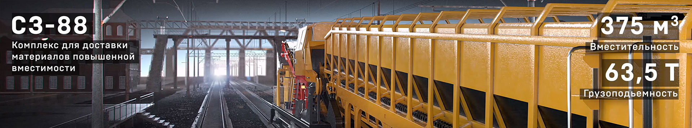
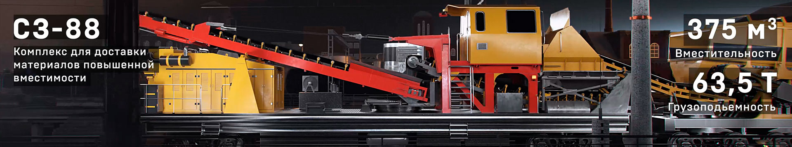
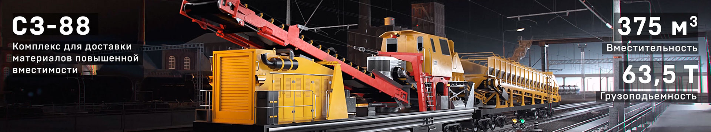
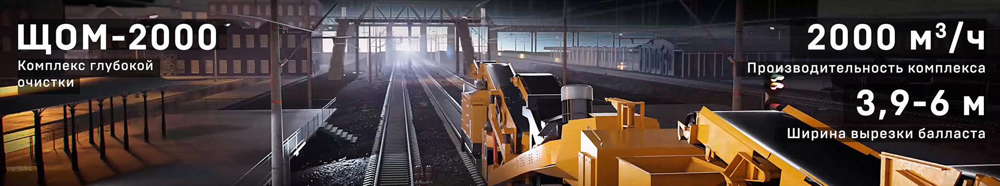
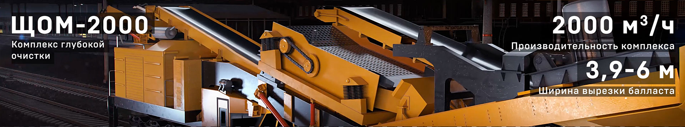
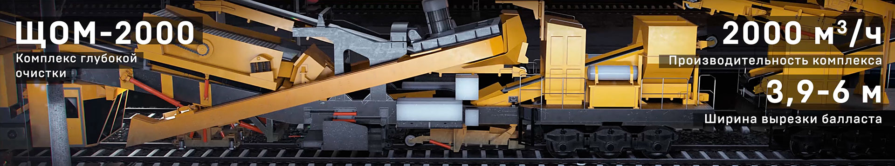
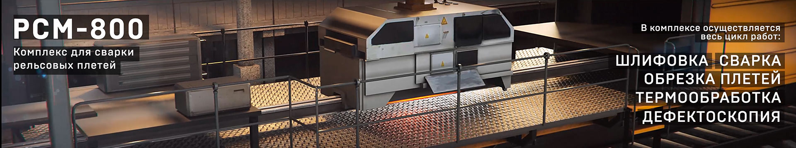
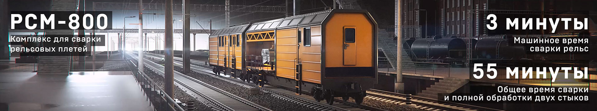
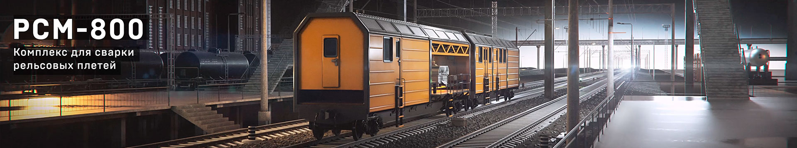
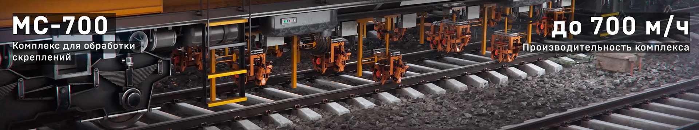
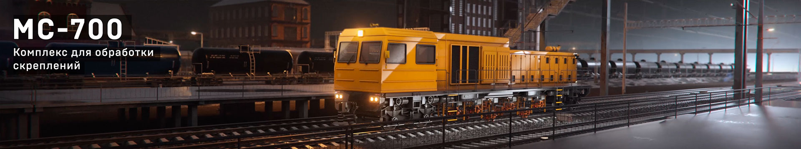
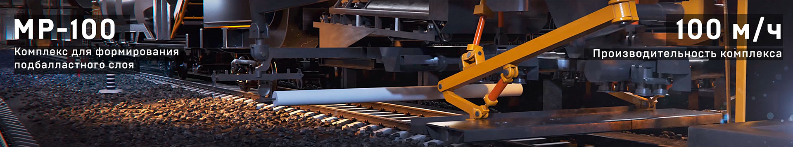
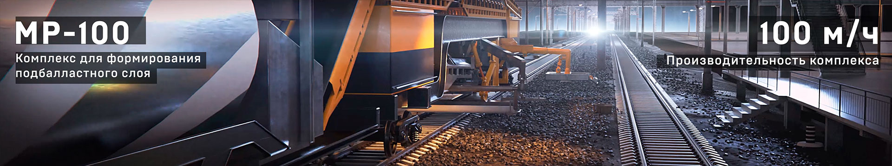
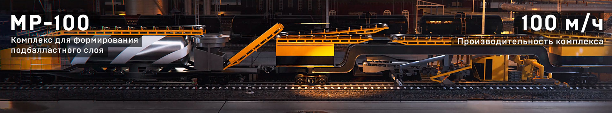
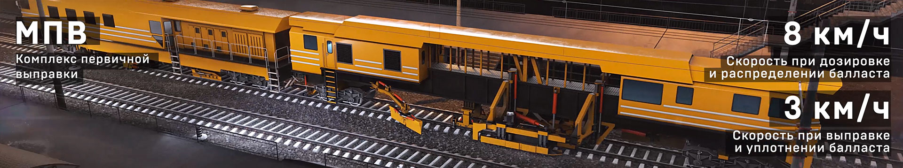
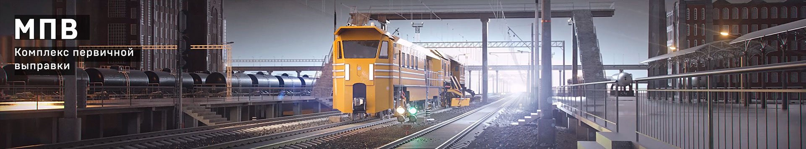
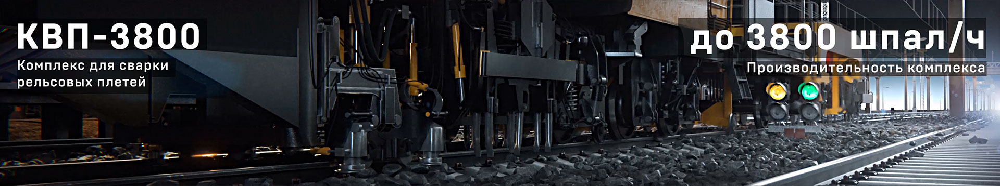
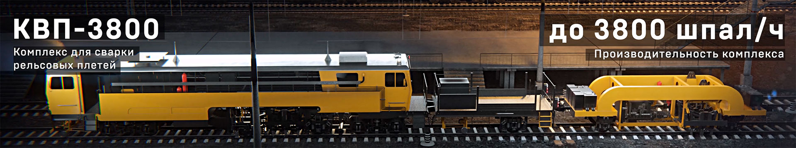
Открыть интерактивную версию →